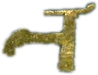

⟲ all
drag pan · wheel zoom · hover info · click select · shift-click compare
The family trees of Tolkien's legendarium: 973 recorded and 850 drawn, 698 canon relations, from the Valar to Bag End, with heraldry and shared-ancestor search.

he Family Trees of Arda opens here, and continues across the gutter——there. A roll hall counts, and every count is derived rather than asserted.
Volume III of the Arda Archive, Peoples and Houses, under The Family Trees. who they were
It is opening 964 of 965 in this volume, the Zimrahin coming before it. The reader who turns on from here reaches Peoples.
Read from arda_codex_manifest.json at build time. [C]
One connected graph of Ainur, Elves and Men — joined by the marriages of Melian, Beren, Tuor, Eärendil and Aragorn — beside the two canonically separate networks of Durin's Folk and the Shire, and now crowned by the Valar of the Valaquenta with their spousal and sibling bonds.
━ descent ━ marriage ╍ sibling (Ainur) ╌ fosterage ╌ disputed [M] ruler
Hover any figure for a quick card; click for the full record — dates, houses, name-meanings, heraldry, citations, and a link into the Timeline. Use the house-jumps in the toolbar to travel the Ages.